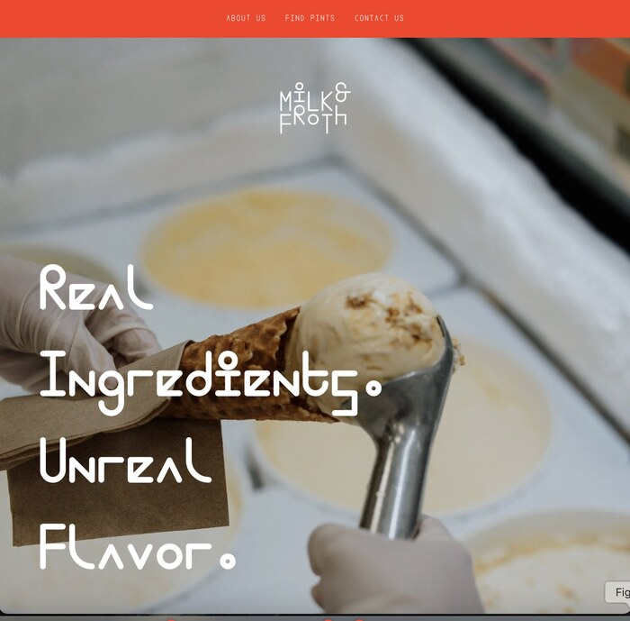
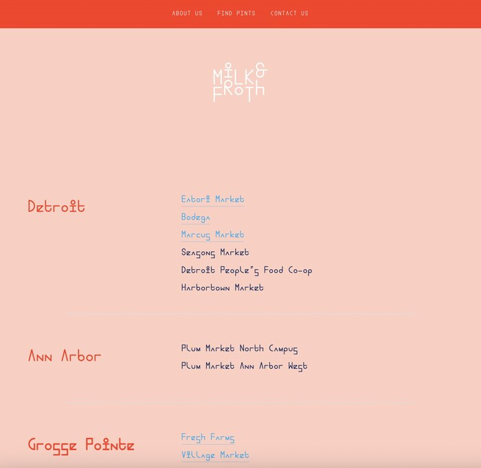
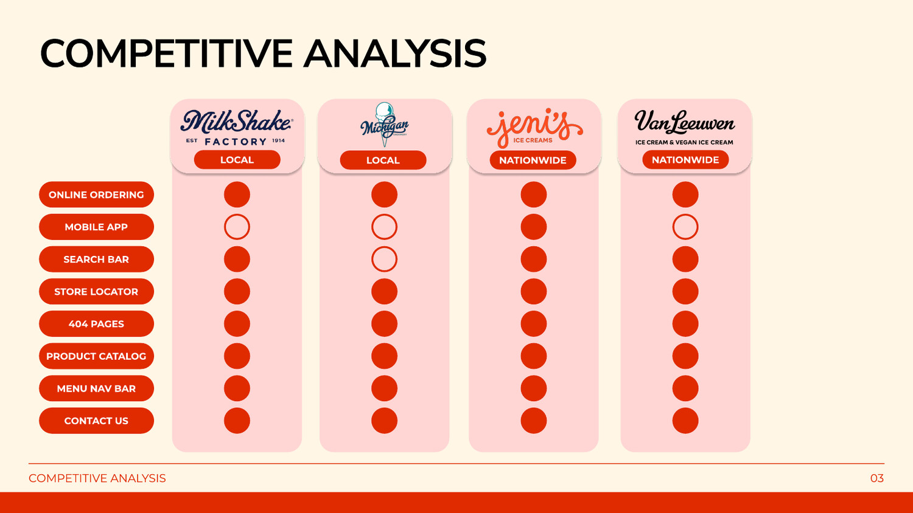
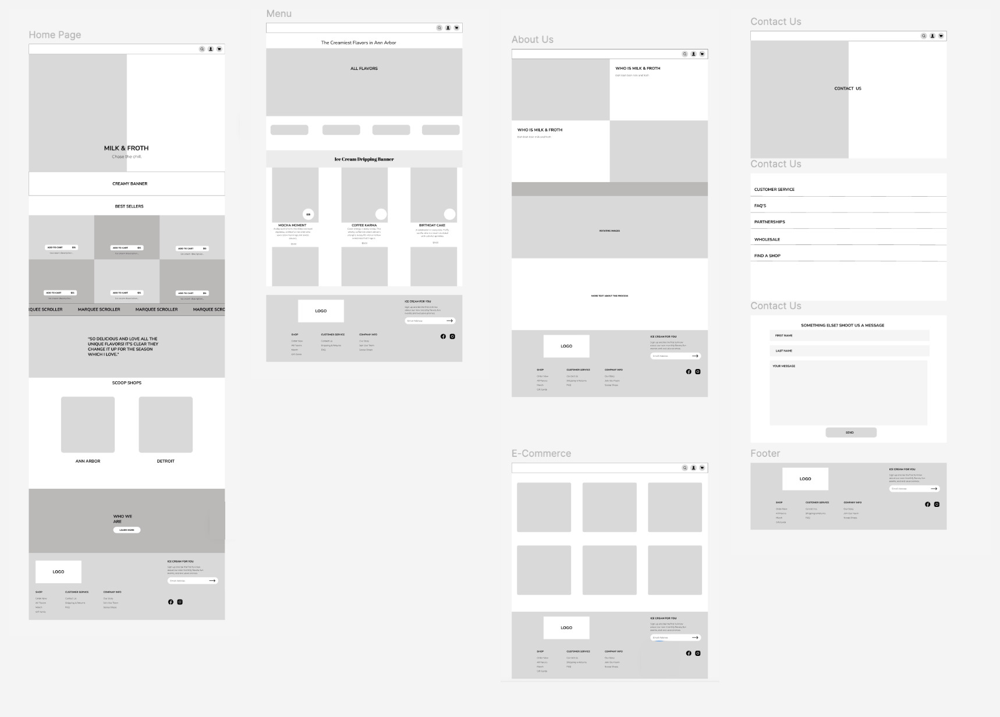
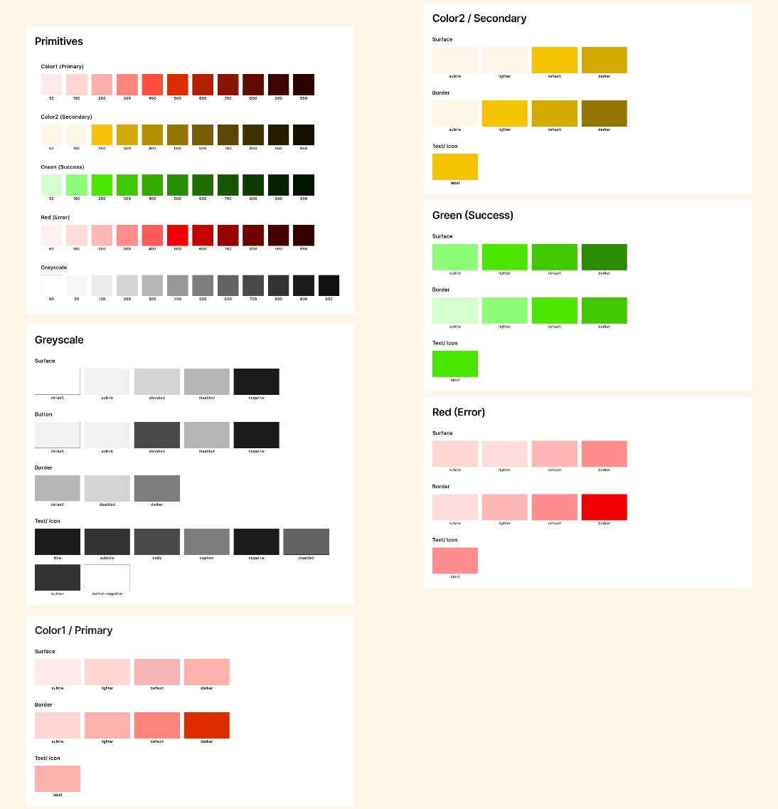
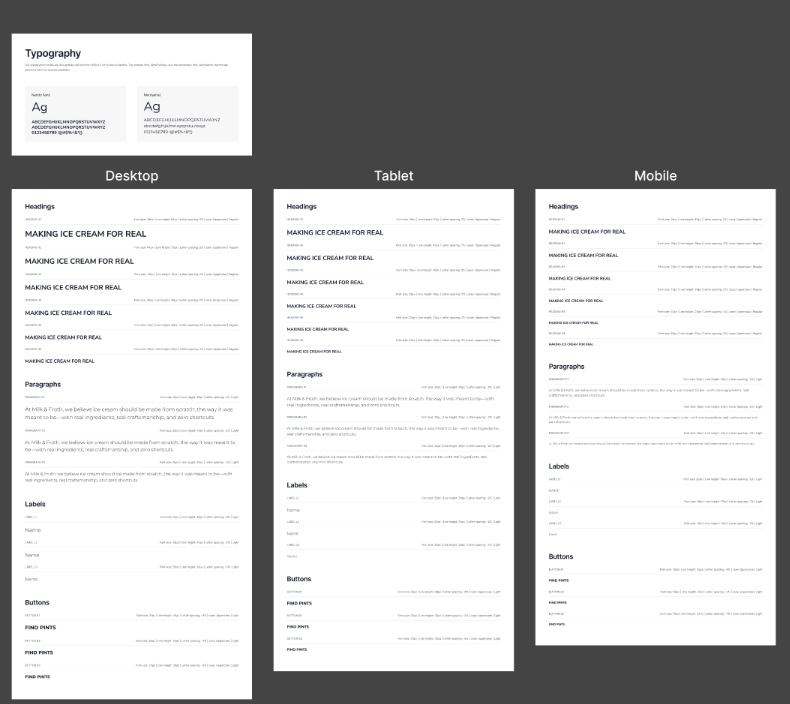
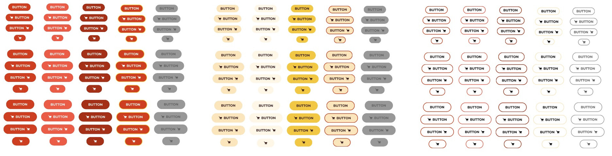
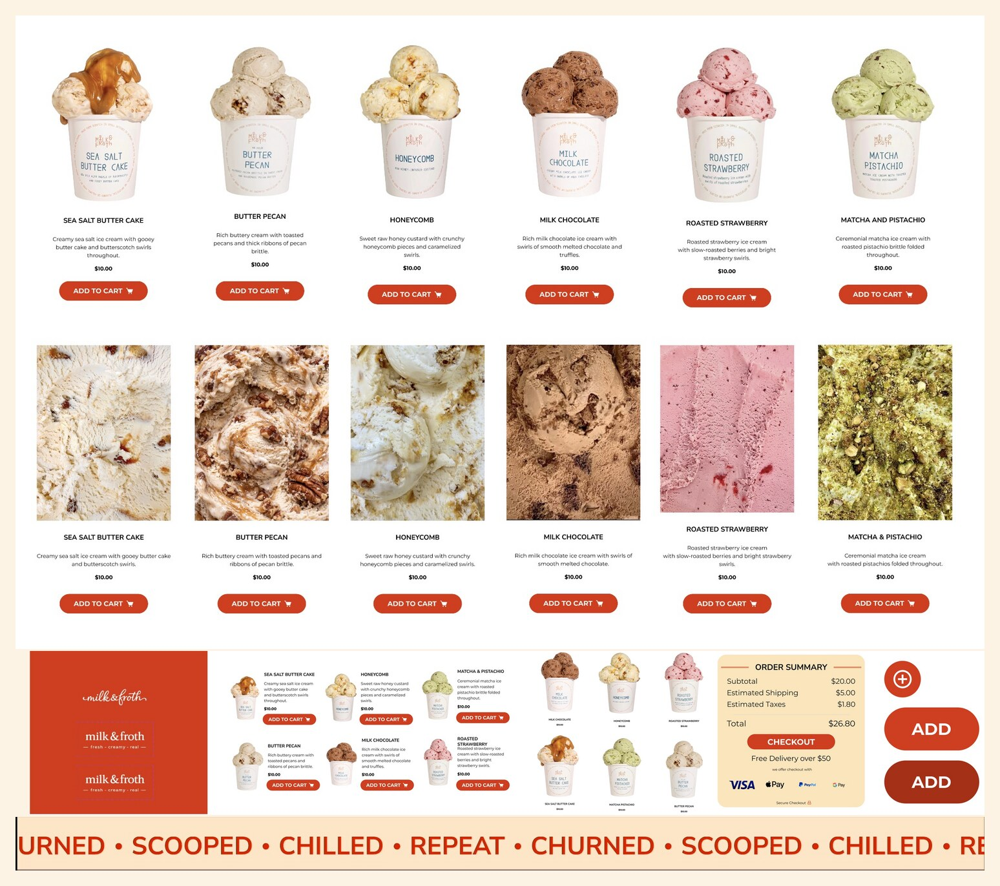
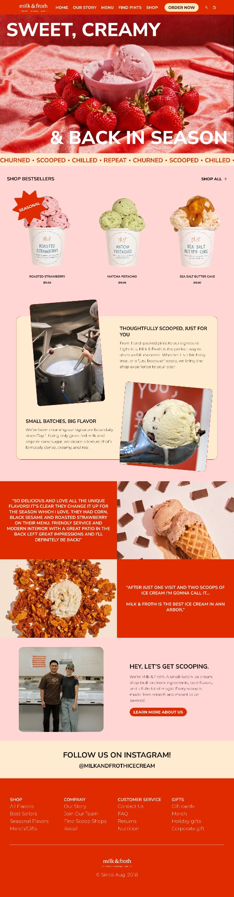
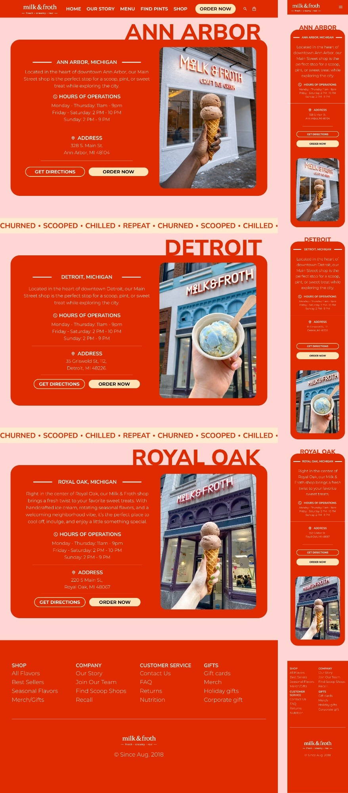

LANE 1 · 2026
Milk and Froth Redesign
Making a Detroit ice cream website as vibrant as the shop
3design goals
4brands benchmarked
5pages designed
2layouts: desktop + mobile
FRAME 1
Problem
The shop feels vibrant and handcrafted. The website doesn't.


FRAME 2
Research
4 brands, 8 features.
Ordering and locators are table stakesMobile + search = room to stand out

FRAME 3
Design Goals
Three goals, each tied to a feature.
GOAL 1
Show off distinctive flavors and the handcrafted process
GOAL 2
Make shops easy to find across Michigan
GOAL 3
Make browsing image-forward and intuitive
FRAME 4
Wireframes
Five pages mapped before any color.
HomeMenuAboutE-commerceContact

FRAME 5
Design System
Color, type, buttons and components.
Roasted StrawberryNunito SansMontserrat




FRAME 6
Final Design
Desktop and mobile, every goal shown.


FRAME 7
Outcome
Before and after, side by side.